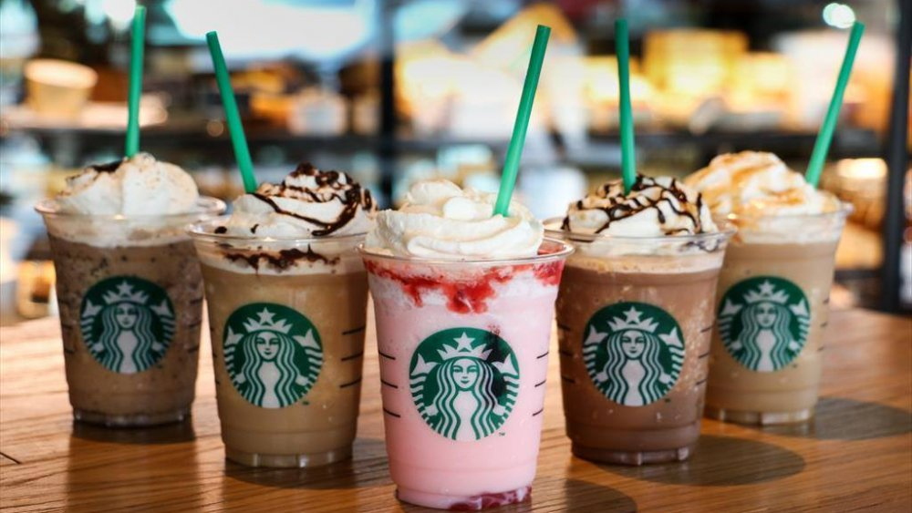

O Starbucks é uma cadeia globalmente reconhecida por suas bebidas à base de café, oferecendo uma ampla variedade de opções, desde espressos e cappuccinos até frappuccinos e chás. Além dos cafés, o Starbucks também é conhecido por seus lanches, doces e sanduíches. A marca é famosa pelo seu ambiente acolhedor e moderno, tornando-se um espaço popular para socializar, trabalhar ou relaxar. O serviço é geralmente rápido, e a personalização das bebidas é um grande atrativo—você pode ajustar os ingredientes de acordo com suas preferências. O Starbucks também é conhecido por sua inovação em bebidas sazonais e promoções, como os famosos Pumpkin Spice Lattes no outono e os refrescantes Cold Brews no verão. Com uma vasta gama de opções, o Starbucks tenta atender a uma ampla variedade de gostos e necessidades, mantendo uma reputação sólida tanto por seus produtos quanto por sua experiência de cliente.
